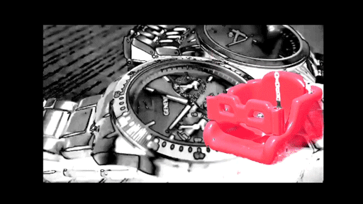
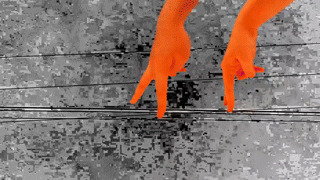
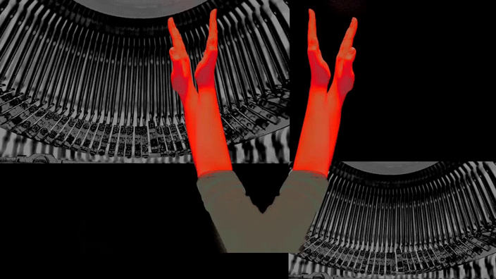

Spirit in Machine, 2019
Time: 1 min 40 seconds
Venue: GDES graduate studio, Computer Lab, Pollak Building, Richmond, USA
Technique: Digital Art, Video Arts, Collage, Three-screen video play
Software: After Effect, Premiere, Photoshop
Spirit in Machine 是一个多媒体装置项目研究在机械的重复工作特性和人的规律的肢体语言之间的相似性。机械也是一种生物他们工作在不同的时间区域和以不同的时间速度工作。这是每个机械内在的不同灵魂和核心，就像每个人都有不同的内心是一样的。三个iMac设备一起工作，但是他们开始播放的时间是不一样的。他们一个跟着一个开始播放。这个跟从和重复的播放模式相似于人的日常肢体的重复动作。
Featured on Anderson Gallery both online and physical show: Students Video Work: Round 2.
Click here for watching Spirit in Machine video on Vimeo.






